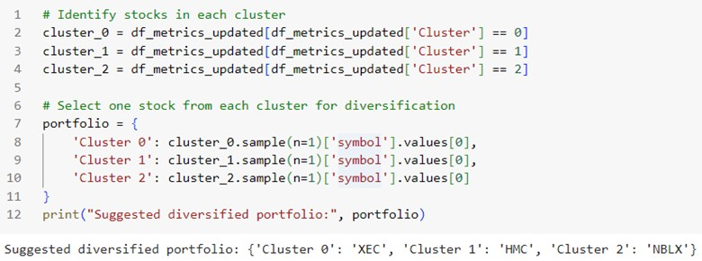

Abstract
Imagine we are given a massive dataset containing various stocks with different financial metrics. Portfolio managers often need to devise strategies to build risk-adjusted portfolios that minimize risk for a given level of return. To achieve this, they must select stocks that are either uncorrelated with each other or find similar stocks to gain adequate exposure to specific market segments. In this context, we use an unsupervised learning method to analyze unlabeled data. To better understand the needs and motivations of a Financial Analyst, let's explore an Empathy Map:
By understanding the Financial Analyst's perspective, we can tailor our approach to ensure our unsupervised learning method effectively supports their goals of building optimized, diversified portfolios.
Acknowledgments
The data is imported in the form of .csv file representing 5222 TD Ameritrade API stock symbols that were gathered from a GitHub repository run by areed1192. The file can be found here: GitHub Repository
Project Overview
In this section, I will provide a quick run-through of the key steps and findings from the project.
Objective
The primary aim of this project was to cluster stocks based on key financial metrics (ROI, ROE, ROA) to facilitate the creation of a diversified investment portfolio.
Data Cleaning and Preprocessing
Data Cleaning: Outliers were removed using the standard deviation method to ensure a more robust dataset, focusing on the most reliable data points.
Normalization: Financial data was normalized using the RobustScaler to mitigate the impact of differing scales among the metrics, enhancing the clustering performance.
Filtering Process: The benchmarks used for ROI, ROE, and ROA (around 40, 30, and 30 respectively) significantly influence the clustering results. Changing these benchmarks can lead to different stocks being included or excluded from the dataset, affecting the overall clustering outcome.
Dimensionality Reduction
PCA: Principal Component Analysis reduced the dimensionality from three metrics to two principal components, retaining 98.35% of the variance. This step simplified the clustering process and visualization.
Clustering Algorithm
K-Means: Initially, the K-Means algorithm was used for clustering due to its simplicity and efficiency. By the end, the K-Means++ algorithm was implemented due to its superior centroid initialization compared to standard K-Means, resulting in faster convergence.
Optimal Number of Clusters: Determined using the elbow method and silhouette scores, three clusters were chosen as the optimal number.
Cluster Interpretation
Cluster Analysis: Stocks were grouped into three clusters based on their financial performance:
- Cluster 1 (Blue): Companies that perform poorly across all three metrics (ROI, ROE, ROA). These stocks might be undervalued but also carry higher risk.
- Cluster 2 (Purple): Average-performing companies that might excel in some metrics while lagging in others. These are typically stable companies with moderate risk and return profiles.
- Cluster 3 (Yellow): High-performing companies excelling across all three metrics. These stocks are generally considered strong performers with potentially higher returns but may be overvalued.
Financial Findings
ROI, ROE, and ROA Correlation: These metrics are critical indicators of a company's profitability and efficiency in using its assets and equity. Higher values in these metrics generally indicate better financial health and management efficiency.
Cluster Characteristics
- Cluster 1 (Underperformers): This may include companies in distress or with poor management efficiency. They may be potential turnaround opportunities or represent high-risk investments.
- Cluster 2 (Average Performers): Likely consists of well-established companies with stable but not exceptional performance. They can be considered for conservative investment strategies.
- Cluster 3 (Top Performers): Represents companies with robust financial health and superior management effectiveness. These companies are typically market leaders in their sectors.
Why K-Means?
K-Means is straightforward to implement and understand. More complex algorithms like Gaussian Mixture Models (GMM) can have higher computational costs. GMM, for example, involves fitting a probabilistic model and may require more computational resources and time. K-Means also works well with large datasets and is effective when clusters are spherical and equally sized, which is often a reasonable assumption for financial metrics. While Gaussian Mixture Models are more flexible regarding cluster shape, they can be overkill if the data does not exhibit significant deviations from spherical clusters.
The Math Behind the Model
1. Clustering: K-Means Algorithm
Definition:
K-Means clustering is a method of vector quantization, originally from signal processing, that aims to partition ‘n’ observations into ‘k’ clusters in which each observation belongs to the cluster with the nearest mean. K-Means minimizes within-cluster variances (squared Euclidean distances). Broken into steps, the algorithm is executed in the following order:
- First, choose K–the number of clusters. Then randomly put ‘K’ feature vectors, called centroids, into the feature space.
- Next, compute the distance from each sample ‘x’ to each centroid ‘c’ using some metric like the Euclidean distance. Then assign the closest centroid to each sample.
- For each centroid, calculate the average feature vector of the samples labeled with it. These average feature vectors become the new locations of the centroids.
- Recompute the distance from each sample to each centroid, modify the assignment, and repeat the procedure until the assignments don’t change after centroid locations are recomputed. In other words, repeat these steps until:
- The sum of the distances is minimized (converges to a local minimum)
- The maximum number of iterations has been reached
- Finally, we conclude the clustering with a list of assignments of centroids IDs to the samples.
Optimization Perspective
Given a dataset \(x_i\) for \(i=1\) to \(n\), cluster centers \(c_j\) for \(j=1\) to \(k\) and assignment \(r\). The goal is to minimize the sum of squared distances of data points to their assigned cluster centers.
$$ \min_{c, r} J(c, r) = \min_{c, r} \sum_{i=1}^n \sum_{k=1}^K r_{ik} (x_i - c_k)^2 $$
Subject to conditions \(r \in \{0,1\}^{n \times K}\) and \(\sum_{k=1}^K r_{ik}=1\)
Assignment step:
Given ‘c’, update assignment ‘r’ by solving:
$$ \min_{r} \sum_{i=1}^n \sum_{k=1}^K r_{ik} (x_i - c_k)^2 $$
Subject to conditions \(r_i \in \{0,1\}^{n \times K}\) and \(\sum_{k=1}^K r_{ik}=1\)
Solution: \(k* = \arg\min_{k=1}^K (x_i - c_k)^2\) and \(r_{ik*} = 1\). This solution assigns \(x_i\) to the nearest cluster.
Refitting step:
Given ‘r’, update ‘c’ by solving:
$$ \min_{c} \sum_{i=1}^n \sum_{k=1}^K r_{ik} (x_i - c_k)^2 $$
where \(c_i, …, c_k\) can be optimized independently:
$$ \min_{c_k} \sum_{i=1}^n r_{ik} (x_i - c_k)^2 $$
By solving the first derivation, the equation becomes:
$$ 2 \sum_{i=1}^n r_{ik} (x_i - c_k) = 0 $$
$$ c_k = \frac{\sum_{i=1}^n r_{ik} x_i}{\sum_{i=1}^n r_{ik}} $$
where \(\sum_{i=1}^n r_{ik} x_i\) denotes the summation of all samples of the \(k\)-th cluster and \(\sum_{i=1}^n r_{ik}\) is the number of samples assigned to the \(k\)-th cluster.
Convergence property
Why K-Means converge?
Convergence guarantee: Whenever an assignment is changed, the sum squared distances \(J\) of data points from their assigned cluster centers is reduced. Whenever a cluster center is moved, \(J\) is reduced.
Test for convergence: If the assignments do not change in the assignment step, we have converged (to at least a local minimum).
Local minimum of K-Means: Since the objective function of \(J\) is non-convex, the coordinate descent on \(J\) is not guaranteed to converge to the global minimum. There is nothing to prevent K-Means from getting stuck at a local minimum, and sometimes it may get stuck at a poor local minimum. We could run K-Means with multiple random initializations and pick the one with the lowest objective value as the final clustering result.
2. Dimensionality Reduction: Principal Component Analysis (PCA)
Definition: Dimensionality Reduction
The goal of dimensionality reduction is to find a \(u\) (basis of a subspace) in low dimension that best reflects the original data. PCA is one typical unsupervised learning dimensionality reduction method. The benefits of reducing the dimension are to visualize data easier, alleviate overfitting, and reduce the computational cost of high dimensional data. The basic idea is to find a lower-dimension space to represent the high-dimension data and find the direction of the hyperplane given the data. Dimensionality reduction can be represented with some mathematical notations below:
Inputs: given a dataset \(D = \{x^{(1)}, ..., x^{(N)}\} \subset \mathbb{R}^D\) with \(D\) being the original dimension.
Goal: find a \(K\)-dimensional (\(K < D\)) subspace \(S\) which consists of \(K\) orthonormal basis vectors \(u_k\) for \(k = 1, ..., K\) and \(u_i^T u_j = 0\) for \(i \neq j\) while \(u_i^T u_i = 1 \forall i\). Hence when projecting all points in \(D\) onto \(S\), the structure of the original data is well preserved.
Outputs: the basis vectors \(u_k\) for \(k = 1, ..., K\) and a new representation \(D' = \{z^{(1)}, ..., z^{(N)}\} \subset \mathbb{R}^K\).
Derivation of PCA
Imagine there is a 2-dimensional data set \(D = \{x^{(1)}, ..., x^{(N)}\}\) where \(x^{(N)} \in \mathbb{R}^2\).
The goal is to find a one-dimensional sub-space \(S = u_1 \in \mathbb{R}^2\) such that when projecting each point \(x^{(N)}\) onto this subspace, we obtain the corresponding reconstruction \(x^{(n)}\) and the representation \(z\). We aim to find the \(u\) such that data \(x^{(1)}, ..., x^{(N)}\) distances to the \(u_1\) is minimum and orientation have a maximum variance.
Derivation I: Maximum Variance
$$ \max_{U} U^T U = I \frac{1}{N} \sum_{n=1}^{N} || x^{(N)} - \mu ||^2 \text{ where } x = \mu + Uz \text{ and } z = U^T (x - \mu) $$
$$ \mu = \frac{1}{N} \sum_{n=1}^{N} x^{(N)} = \mu + U \left( \frac{1}{N} \sum_{n=1}^{N} z^{(N)} \right) = \mu + \frac{1}{N} U U^T \sum_{n=1}^{N} (x^{(N)} - \mu) = \mu $$
$$ \max_{U} U^T U = I \frac{1}{N} \sum_{n=1}^{N} || x^{(N)} - \mu ||^2 = \max_{U} U^T U = I \frac{1}{N} \sum_{n=1}^{N} || x^{(N)} - \mu ||^2 $$
$$ \max_{U} U^T U = I \frac{1}{N} \sum_{n=1}^{N} || Uz^{(N)} ||^2 = \max_{U} U^T U = I \frac{1}{N} \sum_{n=1}^{N} || U^T (x - \mu) ||^2 $$
$$ \max_{U} U^T U = I \frac{1}{N} \sum_{n=1}^{N} \text{Trace}( U^T (x^{(N)} - \mu) (x^{(N)} - \mu)^T U) $$
Derivation II: Minimal Reconstruction Error
$$ \min_{U} U^T U = I \frac{1}{N} \sum_{n=1}^{N} || x^{(N)} - x^{(N)} ||^2 \text{ is equivalent to } \min_{U} U^T U = I \frac{1}{N} \sum_{n=1}^{N} || x^{(N)} - x^{(N)} ||^2 $$
By the Pythagoras Theorem we get:
Solution of PCA
By solving the maximum variance problem we can get the solution for PCA:
$$ \max_{U} \text{Trace}( U^T \Sigma U) = \sum_{k=1}^K U_k^T \Sigma U_k \text{ such that } U^T U = I $$
Define \(\Sigma = \frac{1}{N} \sum_{n=1}^{N} (x^{(N)} - \mu) (x^{(N)} - \mu)^T\)
$$ \max_{U} \text{Trace}( U^T \Sigma U) = \sum_{k=1}^K U_k^T \Sigma U_k \text{ such that } U^T U = I $$
By Lagrange \(L(U, \Lambda_k) = -\text{Trace}(U^T U) + \text{Trace}(\Lambda_k^T (I - U^T U))\) where \(\Lambda_k = \text{diag}(\lambda_1, ..., \lambda_k) \in \mathbb{R}^{K \times K}\)
Taking the first derivative: \(2 \Sigma U - 2 U \Lambda_k = 0\)
$$ \Sigma U_k = U_k \lambda_k \text{ where } U_k \text{ is the eigenvector and } \lambda_k \text{ is the eigenvalue for } k = 1, ..., K $$
We should pick the top \(K\)-eigenvalues as the optimal solution for \(U\).
The above derivation of the optimal solution is summarized in the following steps:
Step 1: Calculate the empirical covariance matrix \(\Sigma = \frac{1}{N} \sum_{n=1}^{N} (x^{(N)} - \mu) (x^{(N)} - \mu)^T\)
Step 2: Do SVD Decomposition of \(\Sigma\) to obtain its \(D\) eigenvalues and eigenvectors and rank them from large to small according to the eigenvalues.
Step 3: Pick the top-K eigenvectors to form the matrix \(U = [q_1, ..., q_k] \in \mathbb{R}^{D \times K}\)
Step 4: The new representation of \(x^{(N)}\) is \(U^T (x^{(N)} - \mu)\).
Data Preparation
Restricting Attributes from 46 to 3
The given data is seen to have 5222 different stocks and 46 attributes. Technically speaking, we can cluster on all 46 attributes. However, I restrict the number of attributes to 3 to better visualize 3 dimensions of the data. Fewer attributes simplify the model, making it easier to interpret and visualize clusters. The metrics that I choose are return on equity (ROE), return on assets (ROA), and return on investment (ROI).
Finding the Best 3 Metrics
According to Zhao & Gao (2020), mature companies or “value stocks” generally have low P/E ratios and high dividend rates. “Growth” companies are companies with broad development prospects but also uncertainties in the future, which have high P/E ratios and low dividend rates. Growth investors seek companies that offer strong earnings growth while value investors seek stocks that appear to be undervalued in the marketplace. However, Tantra et al. (2024) found that the ROA, ROE, and ROI have a significant impact on the value of the company (which in this case is the price to book value (PBV)).
| Financial Metrics | Formulas | Definitions |
|---|---|---|
| ROE | Net Income / Shareholders’ Equity | Shows how well a company manages the capital that shareholders have invested in it. The higher the ROE, the more efficient a company’s management is at generating income and growth from its equity financing. |
| ROI | Net Profit / Cost of Investment | Measures the gain or loss generated relative to the investment cost, providing insight into investment efficiency. |
| ROA | Net Income / Total Assets | Assesses how efficiently a company’s assets are utilized to generate earnings. |
| P/E Ratio | Market Value per Share / EPS | Indicates the market’s expectations of a company’s growth prospects, where higher P/E ratios may indicate expected high growth rates (the company’s stock is overvalued). |
| Dividend Yield | Annual Dividends per Share / Current Share Price | Shows how much a company pays out in dividends relative to its share price. |
| P/B Ratio | Market Price per Share / Book Value per Share | Compares market value to book value. Value companies have lower P/B ratios while growth companies have higher P/B ratios. |
Comparison Table:
| Metric Set | Focus | Primary Goal |
|---|---|---|
| ROA, ROI, ROE | Operational Efficiency, Profitability | Evaluating Company Financial Health |
| P/E, Dividend Yield, PB Ratio | Market Valuation, Investor Expectations | Evaluating Value vs Growth Stocks |
References:
https://media.neliti.com/media/publications/544096-the-effect-of-roa-roe-and-roi-on-company-2793c1de.pdfhttps://medium.com/@facujallia/stock-classification-using-k-means-clustering-8441f75363de
There are many more solid financial metrics, but in this project, I will focus on clustering based on operational efficiency and profitability using the ROA, ROI, and ROE.
Data Cleaning
Remove 0 values from the filtered 3 metrics data frame: After filtering and removing missing values, the total stocks are reduced to 2102 stocks.
Remove outliers to prevent extreme data that may significantly impact the result: Based on comparing the data, I approximate the benchmarks for each ROE, ROA, and ROI to be 40, 30, and 30 respectively. More information can be found from the link below: Link
The statistical summary can be seen from the table below:
Using 3 standard deviations is a widely accepted practice for outlier removal where outliers can significantly impact the interpretation of clusters. By integrating the probability density function of the normal distribution over the range from (mean - 3std) to (mean + 3std), 99.7% of the data points can be captured, which may give a robust model. Values outside the given range will be considered as outliers.
- Return on Equity (ROE): Mean: 12.59%, Standard Deviation: 8.70%, Range for ±3 std: 12.59% ± (3 * 8.70%) → [-13.52%, 38.69%]
- Return on Assets (ROA): Mean: 5.96%, Standard Deviation: 4.58%, Range for ±3 std: 5.96% ± (3 * 4.58%) → [-7.78%, 19.71%]
- Return on Investment (ROI): Mean: 7.58%, Standard Deviation: 5.82%, Range for ±3 std: 7.58% ± (3 * 5.82%) → [-9.89%, 25.05%]
Data Preprocessing: Data Scaling and Visualization
Robust Scaler

From the 3D plot, k-means clustering may be poor when the data is seen to be dense and they are sensitive to outliers. Hence scaling is needed to normalize the data. Scaling transforms the data so that its numerical values lie within a specific range or follow a certain statistical distribution. One scaling method that may be suitable for this data is the robust scaler as outliers might be possible given the current plot.
Principal Component Analysis (PCA)
PCA is a dimensionality reduction method that is used to reduce the dimension of large datasets by transforming the dataset into a smaller one while maintaining its information. To find the suitable amount of reduced component, the sklearn function of explained_variance_ratio_ can be implemented to explain the percentage of variance by each of the selected numbers of components. [0.88529636, 0.09818477, 0.01651887]
With 1 component, we can explain 98% of the variance. With 2 components, 100% of the variance can be explained. So we can select 2 components while maintaining its maximum variability.The scatter plot can be seen from the graph below:
Building the model: K-means Algorithm
Finding the Optimal Number of Clusters Using the Elbow Curve Method
The main idea behind clustering is when we minimize the distance between points in a cluster, it will eventually maximize the distances between clusters. If the within-cluster sum of squares (WCSS) is minimized, the perfect clustering solution may be reached. Some different conditions can reach minimum and maximum WCSS which can be shown in the table below.
| Number of Observations | Number of Clusters | WCSS | Explanation |
|---|---|---|---|
| 6 | 6 | 0 | One point in each cluster results in no WCSS |
| 1000000 | 1 | Maximum | All data points centered in 1 cluster |
Hence it is not necessary to find the minimum number of clusters. Instead, WCSS needs to be as low as possible while still having a small number of clusters. Using the Elbow Method, the data can be plotted as below.
Initially, there is a rapid change in the metric. But where that metric stays mostly the same is the elbow point. Hence I choose the optimum number to be 3.
Scatter Plot for the Clusters

When interpreting the clustering results, companies that perform poorly across all three metrics (ROI, ROE, and ROA) are represented by the blue region. These companies consistently underperform. The purple region represents average-performing companies which might excel in some metrics while lagging in others or perform moderately across all metrics. Lastly, the yellow region denotes the best-performing companies, excelling in all three metrics and consistently outperforming their peers. These companies demonstrate superior financial health and efficiency.
Optimization Method with K-Means++
kmeanspp = KMeans(n_clusters=3, init='k-means++', random_state=0)
K-Means++ provides a better initialization of centroids, leading to better and faster convergence. By starting with centroids that are more spread out, K-Means++ reduces the chances of poor clustering results due to a bad initial choice of centroids.
The assignment step for K-Means costs about O(n x k x d), where ‘n’ is the number of points, ‘k’ is the number of clusters, and ‘d’ is the dimension. The refitting step, which recalculates the centroids, costs for O(n x d), and by combining both assignment and refitting, the computational cost of K-Means algorithm is O(T x (n(k + 1)x d)), where ‘T’ is the number of iterations.
K-Means++ has some additional step on the initialization where they select the first centroid randomly O(1) and for each of the remaining k-1 centroids:
- Compute the distance of each of the n points to the nearest centroid chosen so far
- Time complexity for each new centroid is O(n)
- Total time complexity for initialization is O(nkd)
Assignment and Refitting steps follow the same time complexity with K-Means. Hence the total time complexity for K-Means++ is O(T x (n(k+1)d + nkd)). In summary, while the initialization of K-Means++ is more computationally expensive than in standard K-Means, the improved initialization often leads to faster convergence and better clustering results, making it more efficient overall for many practical applications.
Model Evaluation
Silhouette Plot
To evaluate the performance of the clustering algorithm, the silhouette plot can be implemented as shown in the graph below.
A silhouette plot is a graphical representation of how well each data point lies within its cluster. The silhouette coefficient values range from -1 to 1, where 1 indicates that the sample is well-matched to its cluster, 0 indicates that the sample is on or very close to the decision boundary between 2 neighboring clusters, and negative values indicate that those samples might have been assigned to the wrong cluster. The red dashed line represents the average silhouette score across all samples. In this case, the average score is 0.5, indicating a moderate, reasonably well-defined with some overlaps.
- Cluster 0 (Red): Most samples have a silhouette coefficient between 0.1 and 0.6 with some lying on negative values. The region is relatively wide and long, indicating a large number of samples. The presence of negative values suggests some misclassification with neighboring clusters.
- Cluster 1 (Orange): Most samples have a silhouette coefficient between 0.2 and 0.7. The region is the widest, indicating that the cluster contains the most samples. High silhouette coefficients suggest good separation from other clusters.
- Cluster 2 (Grey): Most samples have a silhouette coefficient between 0.3 and 0.8. The region contains the smallest number of samples among other clusters. High silhouette coefficients suggest good separation from other clusters.
Impact of Filtering Process on Clustering Results
Influence of Benchmarks: The benchmarks set for ROI, ROE, and ROA significantly impact the clustering results. Different thresholds can lead to variations in the dataset, influencing which stocks are included or excluded. For instance, setting higher benchmarks may filter out more companies, resulting in clusters that are more focused on high-performing stocks. Conversely, lower benchmarks might include a wider range of stocks, resulting in more diverse clusters.
Benchmark Sensitivity: The sensitivity of clustering to these benchmarks highlights the importance of carefully selecting thresholds based on the investment strategy. For example, conservative investors might prefer lower benchmarks to include more stable companies, while aggressive investors might set higher benchmarks to focus on high-growth stocks.
Usage of the Clustering
Identify whether the intended stocks are available in the data analysis.
Suggest a simple diversified portfolio with randomly selected stocks from each cluster.
Make some predictions on new dataset.
For predicting, the ‘transform’ and ‘predict’ functions are going to be used instead of ‘fit_transform’ and ‘predict’.
- ‘fit_transform’ vs ‘transform’: ‘fit_transform’ is when we want to fit the scaler to the data and then transform it. This is done during training. ‘transform’ is used to scale new data using an already fitted scaler. This is what we should use for new data points.
- ‘fit_predict’ vs ‘predict’: ‘fit_predict’ is used to fit the KMeans model to the data and then predict the cluster. This is done during training. ‘predict’ is used to predict the cluster for new data points using an already fitted KMeans model.
ROE, ROA, and ROI unscaled version:
ROE, ROA, and ROI scaled version:
Conclusion
The clustering project was initiated to address the needs of these stakeholders by providing a systematic way to classify stocks based on key financial metrics (ROE, ROA, and ROI). By understanding these metrics, stakeholders can make more informed investment decisions, achieve better diversification, and ultimately meet their financial goals. The process of filtering data and choosing benchmarks significantly impacts the clustering results, indicating that careful selection of these parameters is essential for achieving the desired investment outcomes. Future improvements could involve integrating additional financial metrics and exploring advanced clustering techniques to further refine the analysis. Adding sector and industry information can also help understand the clustering in the context of market segments.